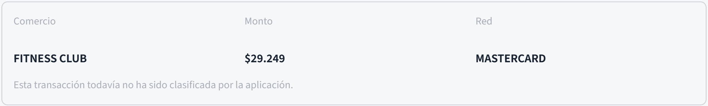
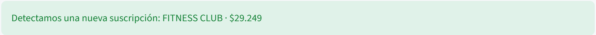
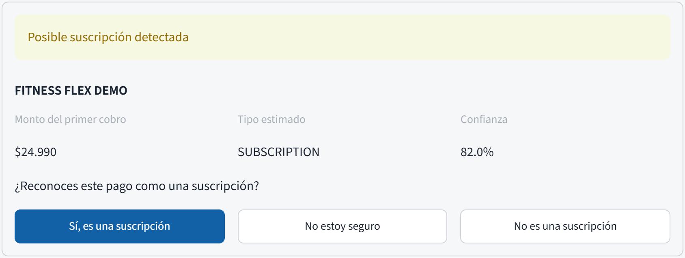
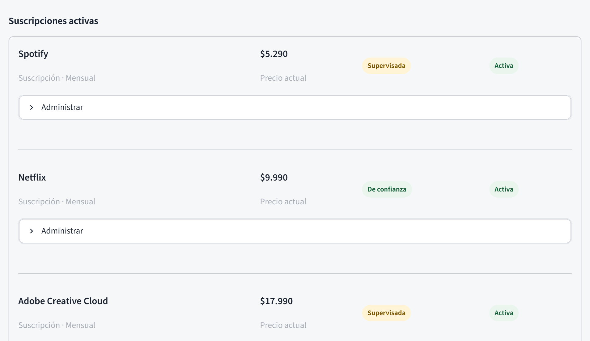
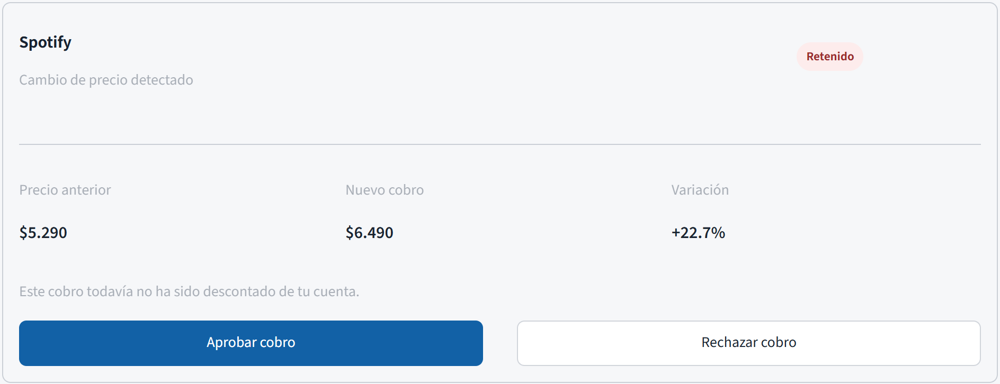

Ley 20.009lo que el cliente no reconoce, el banco lo devuelve
comercio · categoría (MCC) · monto · señales de la red
cómo cobra ese comercio a todos los clientes del banco
suscripción, cuenta o incierto
Detener el cobro antes de que ocurra: los bancos ya pueden bloquear cobros recurrentes con Visa13. Falta validarlo con un emisor.
No depende de que el comercio se declare: aprende de cómo cobra.
El modelo de comercios mejora con cada cliente del banco.

↓ CONDOR



El banco debe devolver todo cargo no reconocido
La reforma premia prevenir antes que devolver
BancoEstado, Nubank y Visa ya muestran suscripciones
calibrar umbrales con históricos de un emisor
leer cada autorización en tiempo real
un emisor digital, [N] cuentas, 3 meses
si el emisor lo permite: Visa ya ofrece bloquearlos13
CONDOR: cada suscripción a la vista desde el primer cobro.
CONDOR quiere que esa respuesta sea siempre cero.
Claude (Anthropic), vía Claude Code. Usada para diseñar y programar esta presentación en HTML, proponer su estructura según la pauta y la guía extendida de la E2, buscar y verificar fuentes públicas, y capturar pantallas del prototipo.
Agregar otros usos (p. ej., apoyo en el código del prototipo)
La IA propuso estructura, redacción y diseño. El equipo revisó, corrigió y validó cada contenido y cifra. Las entrevistas, las decisiones del proyecto y el prototipo son trabajo del equipo, que responde por la exactitud de todo el material.